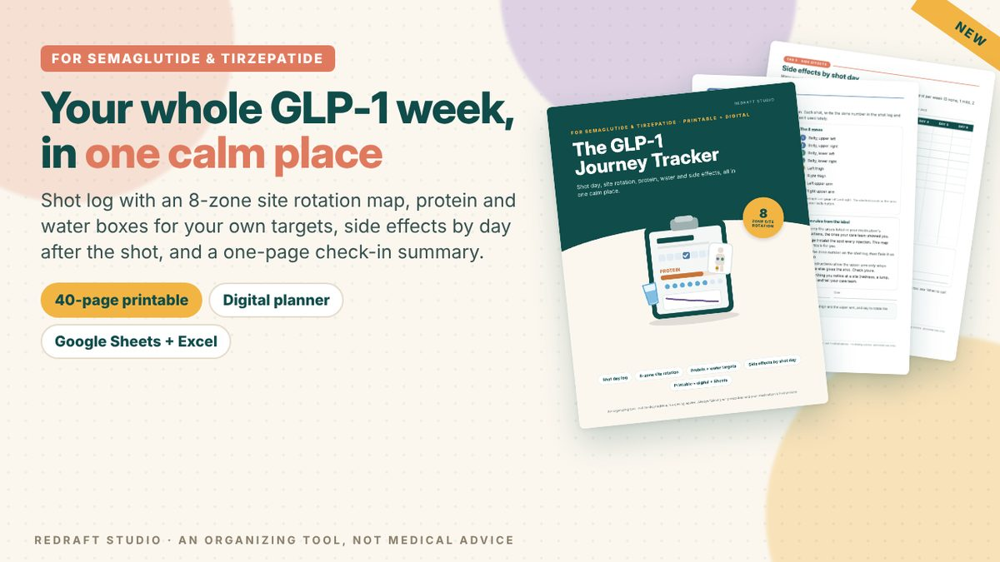
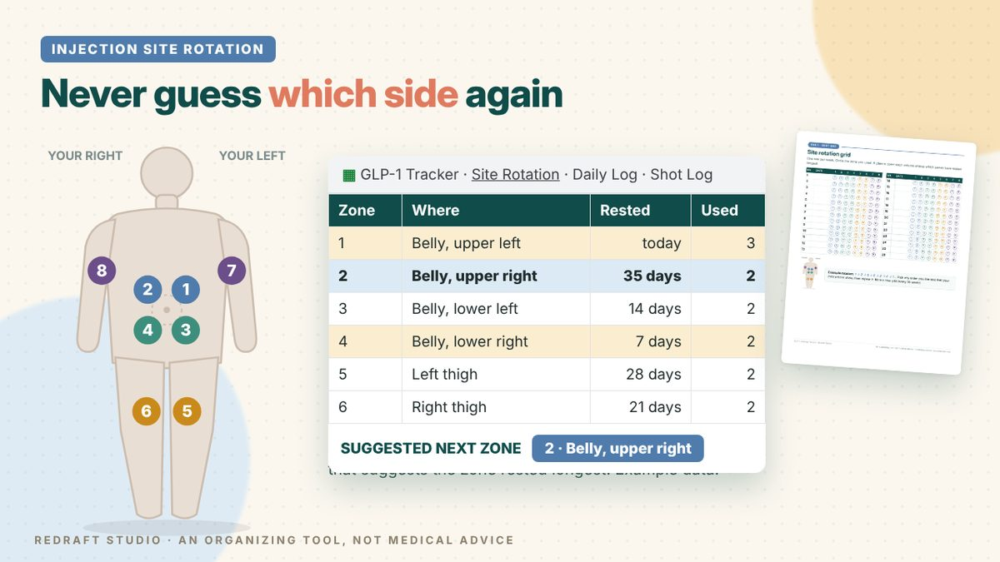
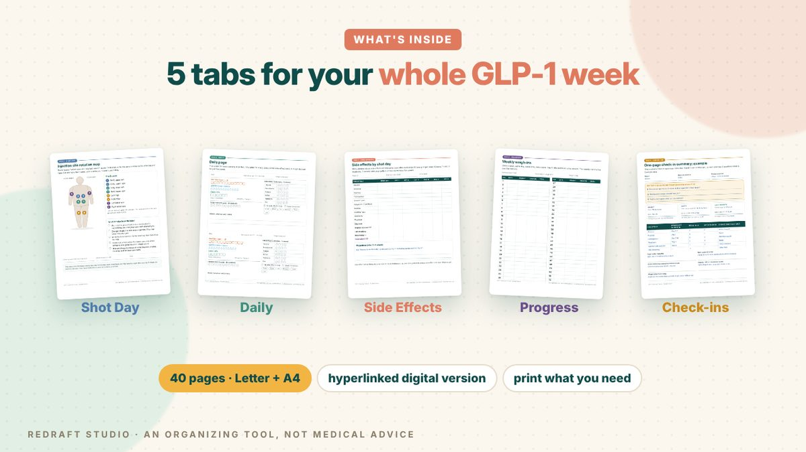
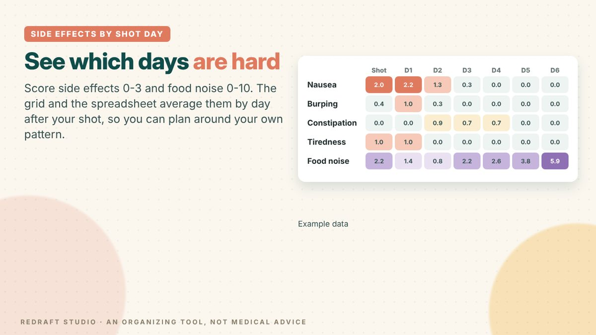
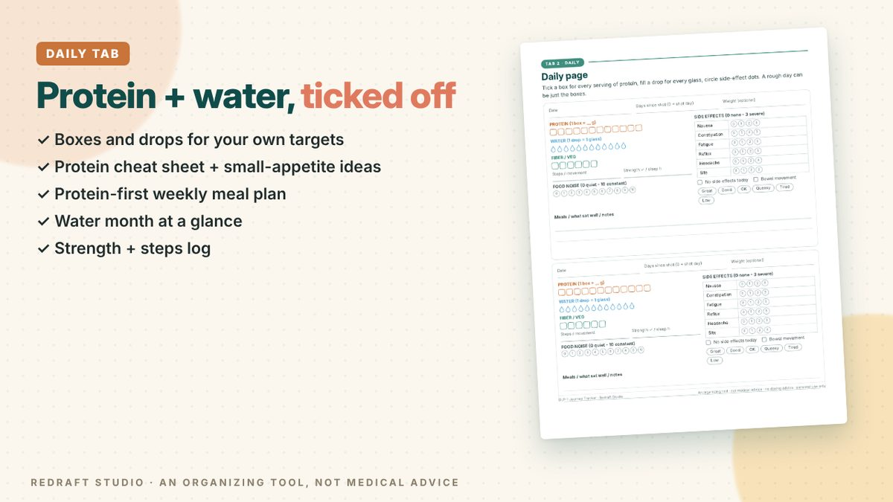
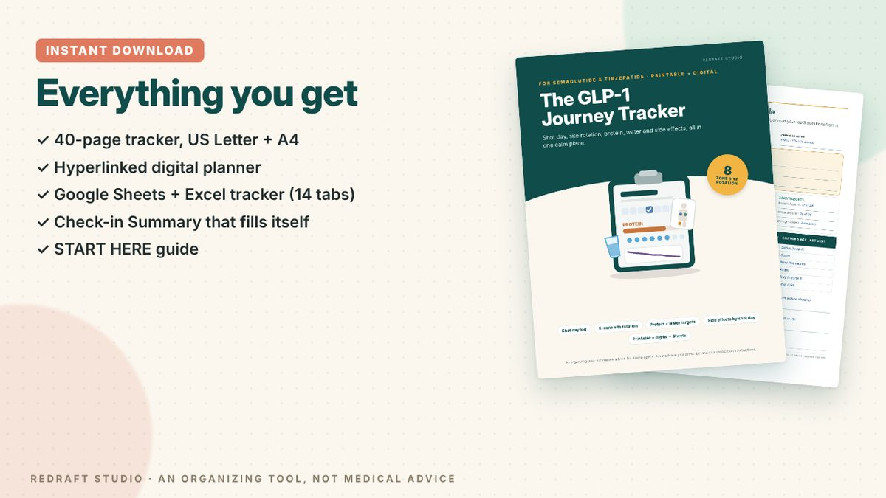

GLP-1 Weight Loss Tracker
Shot log, injection site rotation, protein and water planner in one tracker.
Instant download. Pay once, print as often as you like.

Your whole GLP-1 week, in one calm place.
Most GLP-1 trackers do one thing: log the shot, or count food. This one keeps the whole week together: which spot you used, what you ate and drank against your own targets, how you felt on each day after your shot, and one page to bring to your prescriber. Pay once, keep it. No subscription.
What makes it different
- Injection site rotation, done properly. An 8-zone body map (belly, thighs, upper arms), a 26-week rotation grid, and a spreadsheet that shows how long each zone has rested and suggests the one rested longest. You only mark the zones your instructions allow.
- Protein and water targets you can tick. Boxes and drops for the targets your care team sets (nothing is pre-set), a protein cheat sheet with grams per portion, ideas for a small appetite and a protein-first meal plan.
- Side effects by day after your shot. Score nausea, constipation, burping, tiredness and more 0-3, plus food noise 0-10. The grid and the spreadsheet average them by shot day, day 1, day 2... so you can see your own pattern.
- A check-in summary that fills itself. Pick any dates: weight change, shots logged, protein and water days on target, side effects with their worst day, non-scale victories, plus your top 3 questions. Print it on one page.
- Progress beyond the scale. Weekly weigh-ins with a 4-week average chart, monthly measurements and photo checklist, non-scale victories, a strength log, a plateau detective and a maintenance plan.
- The admin, sorted. Dose step history, missed or late shots, supply and refill count-down, travel checklist, medication list, and an insurance, prior authorization and cost log.
What you get
- 40-page printable tracker, US Letter + A4
- 41-page hyperlinked digital planner for GoodNotes, Notability, Xodo (side tabs, index, one tap to the site map and the summary)
- Google Sheets + Excel tracker, 14 tabs, with example data so you see it working
- START HERE guide
Who it's for
Adults on a weekly GLP-1 or GIP/GLP-1 medication such as semaglutide or tirzepatide who want one place for shots, sites, protein, water, side effects and progress. Works for any medication and schedule.
Important
An organizing tool, not medical advice. It gives no dosing, diet or treatment advice: dose fields say "as prescribed", targets are yours to set with your care team, and missed-dose and storage rules are copied in from your own medication guide. Not affiliated with any medication maker. Digital download for personal use.





Not sure yet? Start with the free kit.
Free GLP-1 Shot Day Kit: a few pages from the same system, free to download and print.
Download the free kit